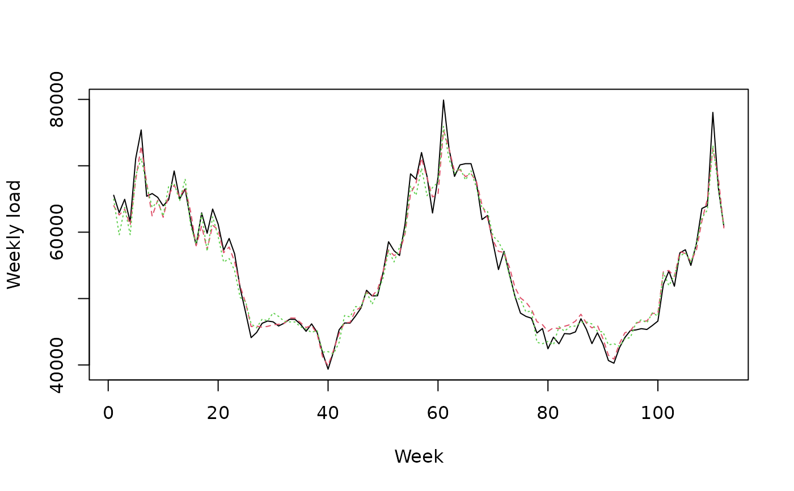
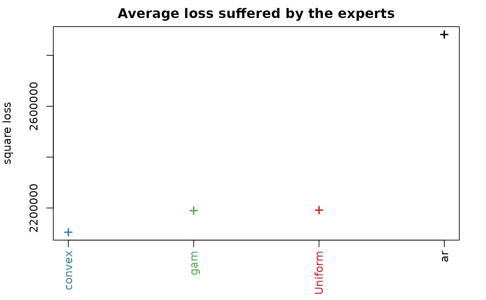
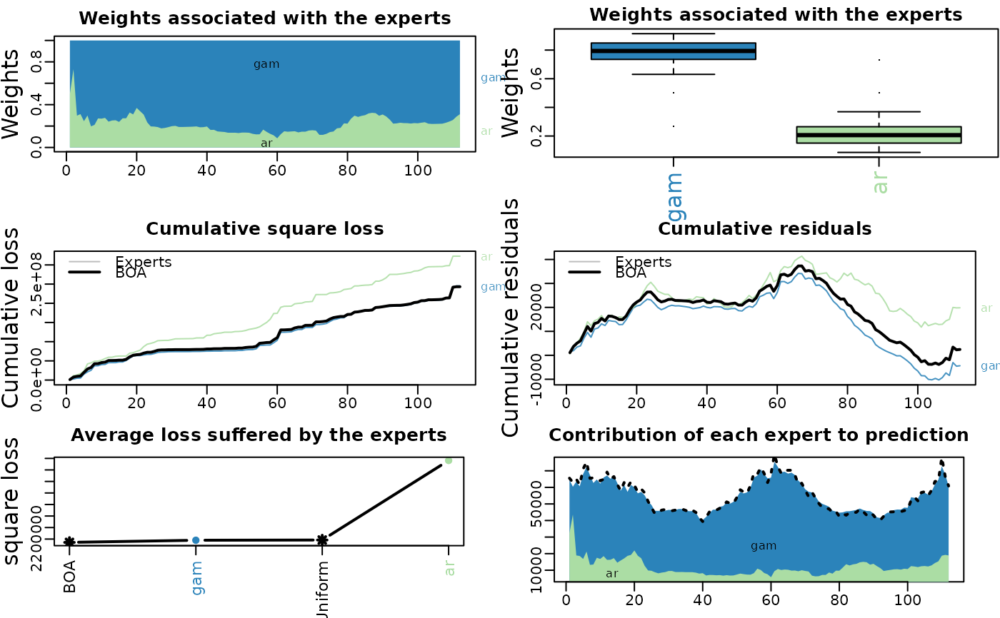

The function mixture builds an
aggregation rule chosen by the user.
It can then be used to predict new observations Y sequentially.
If observations Y and expert advice experts are provided,
mixture is trained by predicting the observations in Y
sequentially with the help of the expert advice in experts.
At each time instance \(t=1,2,\dots,T\), the mixture forms a prediction of Y[t,] by assigning
a weight to each expert and by combining the expert advice.
mixture( Y = NULL, experts = NULL, model = "MLpol", loss.type = "square", loss.gradient = TRUE, coefficients = "Uniform", awake = NULL, parameters = list() ) # S3 method for mixture print(x, ...) # S3 method for mixture summary(object, ...)
| Y | A matrix with T rows and d columns. Each row |
|---|---|
| experts | An array of dimension |
| model | A character string specifying the aggregation rule to use. Currently available aggregation rules are:
|
| loss.type | A string or a list with a component 'name' specifying the loss function considered to evaluate the performance. It can be 'square', 'absolute', 'percentage', or 'pinball'. In the case of the pinball loss, the quantile can be provided by assigning to loss.type a list of two elements:
'Ridge' aggregation rule is restricted to square loss. |
| loss.gradient | A boolean. If TRUE (default) the aggregation rule will not be directly applied to the loss function at hand but to a gradient version of it. The aggregation rule is then similar to gradient descent aggregation rule. |
| coefficients | A probability vector of length K containing the prior weights of the experts (not possible for 'MLpol'). The weights must be non-negative and sum to 1. |
| awake | A matrix specifying the
activation coefficients of the experts. Its entries lie in |
| parameters | A list that contains optional parameters for the aggregation rule. If no parameters are provided, the aggregation rule is fully calibrated online. Possible parameters are:
|
| x | An object of class mixture |
| ... | Additional parameters |
| object | An object of class mixture |
An object of class mixture that can be used to perform new predictions.
It contains the parameters model, loss.type, loss.gradient,
experts, Y, awake, and the fields
A vector of coefficients assigned to each expert to perform the next prediction.
A matrix of dimension c(T,K), with
T the number of instances to be predicted and K the number of
experts. Each row contains the convex combination to form the predictions
A matrix with T rows and d columns that contains the
predictions outputted by the aggregation rule.
The average loss (as stated by parameter loss.type) suffered
by the aggregation rule.
The learning parameters chosen by the aggregation rule or by the user.
A list that contains useful temporary information of the aggregation rule to be updated and to perform predictions.
mixture: print
mixture: summary
See opera-package and opera-vignette for a brief example about how to use the package.
Pierre Gaillard <pierre@gaillard.me>
#' library('opera') # load the package set.seed(1) # Example: find the best one week ahead forecasting strategy (weekly data) # packages library(mgcv)#>#># import data data(electric_load) idx_data_test <- 620:nrow(electric_load) data_train <- electric_load[-idx_data_test, ] data_test <- electric_load[idx_data_test, ] # Build the expert forecasts # ########################## # 1) A generalized additive model gam.fit <- gam(Load ~ s(IPI) + s(Temp) + s(Time, k=3) + s(Load1) + as.factor(NumWeek), data = data_train) gam.forecast <- predict(gam.fit, newdata = data_test) # 2) An online autoregressive model on the residuals of a medium term model # Medium term model to remove trend and seasonality (using generalized additive model) detrend.fit <- gam(Load ~ s(Time,k=3) + s(NumWeek) + s(Temp) + s(IPI), data = data_train) electric_load$Trend <- c(predict(detrend.fit), predict(detrend.fit,newdata = data_test)) electric_load$Load.detrend <- electric_load$Load - electric_load$Trend # Residual analysis ar.forecast <- numeric(length(idx_data_test)) for (i in seq(idx_data_test)) { ar.fit <- ar(electric_load$Load.detrend[1:(idx_data_test[i] - 1)]) ar.forecast[i] <- as.numeric(predict(ar.fit)$pred) + electric_load$Trend[idx_data_test[i]] } # Aggregation of experts ########################### X <- cbind(gam.forecast, ar.forecast) colnames(X) <- c('gam', 'ar') Y <- data_test$Load matplot(cbind(Y, X), type = 'l', col = 1:6, ylab = 'Weekly load', xlab = 'Week')# How good are the expert? Look at the oracles oracle.convex <- oracle(Y = Y, experts = X, loss.type = 'square', model = 'convex')#> Warning: The best convex oracle is only approximated (using optim).oracle.convex#> Call: #> oracle.default(Y = Y, experts = X, model = "convex", loss.type = "square") #> #> Coefficients: #> gam ar #> 0.751 0.249 #> #> rmse mape #> Best expert oracle: 1480 0.0202 #> Uniform combination: 1480 0.0206 #> Best convex oracle: 1450 0.0200# Is a single expert the best over time ? Are there breaks ? oracle.shift <- oracle(Y = Y, experts = X, loss.type = 'percentage', model = 'shifting') plot(oracle.shift)oracle.shift#> Call: #> oracle.default(Y = Y, experts = X, model = "shifting", loss.type = "percentage") #> #> 0 shifts 28 shifts 55 shifts 83 shifts 111 shifts #> mape: 0.0202 0.0159 0.0154 0.016 0.0209# Online aggregation of the experts with BOA ############################################# # Initialize the aggregation rule m0.BOA <- mixture(model = 'BOA', loss.type = 'square') # Perform online prediction using BOA There are 3 equivalent possibilities 1) # start with an empty model and update the model sequentially m1.BOA <- m0.BOA for (i in 1:length(Y)) { m1.BOA <- predict(m1.BOA, newexperts = X[i, ], newY = Y[i]) } # 2) perform online prediction directly from the empty model m2.BOA <- predict(m0.BOA, newexpert = X, newY = Y, online = TRUE) # 3) perform the online aggregation directly m3.BOA <- mixture(Y = Y, experts = X, model = 'BOA', loss.type = 'square') # These predictions are equivalent: identical(m1.BOA, m2.BOA) # TRUE#> [1] TRUE#> [1] TRUE#> Aggregation rule: BOA #> Loss function: square loss #> Gradient trick: TRUE #> Coefficients: #> gam ar #> 0.689 0.311 #> #> Number of experts: 2 #> Number of observations: 112 #> Dimension of the data: 1 #> #> rmse mape #> BOA 1470 0.0201 #> Uniform 1480 0.0206